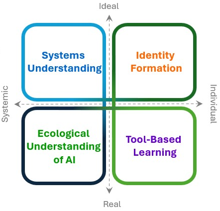

EcoAI framework: Un Modello Pedagogico per l'Antropocene
Il framework EcoAI propone un approccio interdisciplinare per integrare Ecoliteracy e Intelligenza Artificiale (AI) nell'educazione civica delle scuole secondarie, formando una nuova generazione di cittadini ecotecnologici.
Obiettivi della Ricerca
- Esplorare le percezioni degli studenti su sostenibilità e AI.
- Analizzare l'intersezione tra literacy ambientale e digitale.
- Sviluppare un modello pedagogico integrato per l'educazione civica.
Domande di Ricerca
- Come gli studenti percepiscono l'impatto dell'AI sulle questioni ambientali?
- Qual è il livello di ecoliteracy e competenze civiche ambientali dei giovani?
- Come i media digitali influenzano la cittadinanza ecologica?
Cornice Teorica
- Postumanesimo Eco-digitale: Elaborazione teorica della teoria ecodigitale postumanista.
- Ecomedia Literacy: Analisi critica dell'impatto ecologico delle tecnologie mediali.
- Educazione Civica Digitale e SDGs: Contesto normativo nazionale ed internazionale di riferimento.
Fondamenti scientifici del Framework
Di seguito sono disponibili il fondamento teorico del Framework EcoAI definito Postumanesimo Eco-digitale e
la review sistematica e bibliometrica su Ecoliteracy e Social Media.
Il primo elabora la cornice epistemologica e pedagogica che integra postumanesimo, ecoliteracy e AI literacy, delineando i quattro quadranti del framework.
Costituisce il riferimento concettuale che sottende ai domini e sottodomini, fornendo criteri di coerenza teorica e rigore metodologico e stabilendo la base scientifica e filosofica su cui si innesta l’intera architettura EcoAI.
La review sistematica e bibliometrica costituisce la base teorico-empirica del Framework EcoAI.
Analizza la letteratura internazionale su ecoliteracy e media digitali, fornendo indicatori
validati e una mappatura dei trend di ricerca, garantendo trasparenza, replicabilità e un collegamento diretto con la comunità scientifica.
Nell'EcoAI framework contribuisce a definire il contesto di referenzialità per il dominio
Identity Formation, con particolare attenzione ai sottodomini
Ecodigital Positionality & Imaginaries e
Algorithmic Bias, Fairness & Representation.
I Quattro Quadranti del Framework EcoAI
Il framework si articola in quattro domini interconnessi che guidano lo sviluppo di competenze eco-digitali integrate. Clicca su ciascun quadrante per esplorarne i dettagli.
Vai alla pagina dedicata con descrizioni e rubriche complete.
Sviluppo delle Competenze
Il framework allinea le competenze EcoAI con il modello europeo GreenComp, definendo quattro livelli di padronanza. Seleziona una competenza per visualizzare i descrittori di livello.
Relazione tra Quadranti e Aree GreenComp
Quadri fondativi per lo sviluppo e la valutazione delle competenze EcoAI
La robustezza valutativa di EcoAI si fonda sull’integrazione profonda con standard consolidati di educazione alla sostenibilità e di AI literacy. In particolare, il framework assume come riferimento primario GreenComp e lo integra con modelli di alfabetizzazione all’AI (Long & Magerko; AICOS; Generative AI Literacy) per ottenere una strategia valutativa multilivello che coniuga profondità qualitativa e rigore quantitativo.
GreenComp: quadro europeo delle competenze per la sostenibilità
GreenComp articola la competenza di sostenibilità in quattro aree e dodici sotto-competenze (tra cui: Systems thinking – G1, Critical thinking – G2, Agency – G7, Sustainability justice – G12). EcoAI adatta esplicitamente GreenComp, definendo quattro livelli di padronanza – Base, Intermedio, Avanzato, Critico – e rubriche già contestualizzate agli scenari eco‑digitali. Questa corrispondenza fornisce un linguaggio comune e riconosciuto a livello europeo per descrivere la progressione delle competenze, facilitando comparabilità e trasferibilità degli esiti formativi.
AI Literacy: Long & Magerko, AICOS e Generative AI Literacy
Il framework integra più modelli per coprire in modo completo le dimensioni dell’alfabetizzazione all’AI e Linee guida ministeriali per l’introduzione dell’Intelligenza Artificiale nelle scuole. Il modello di Long & Magerko (Understanding, Interacting, Critiquing, Designing, Evaluating) è mappato sui quadranti EcoAI (ad es. Understanding → Systems Understanding; Interacting → Tool‑Based Learning; Critiquing → Identity Formation; Designing → Hybrid modules; Evaluating → Digital ecosystems). AICOS fornisce una scala quantitativa validata per la misurazione dell’AI literacy (dimensioni quali: comprensione dell’AI, lavoro con l’AI, impatto sociale, bias/fairness, decisione e responsabilità), utile come benchmark psicometrico per verificare le rubriche e i questionari (α di Cronbach > .8). La Generative AI Literacy (Annapureddy et al.) arricchisce in modo specifico il dominio Tool‑Based Learning con competenze operative e riflessive sui sistemi generativi.
Ne risulta una validazione a più strati: GreenComp struttura i livelli qualitativi; i descrittori specifici per l’AI si appoggiano a Long & Magerko e a Generative AI Literacy; AICOS consente la validazione quantitativa degli item e delle scale. Insieme, questi elementi garantiscono ampiezza di copertura, coerenza teorica e solidità empirica.
Tabella di allineamento consolidata (Quadranti ↔ Competenze ↔ AI Literacy ↔ SDG)
| Quadrante EcoAI framework | Competenze GreenComp chiave | AI Literacy (Long & Magerko) | SDG associati |
|---|---|---|---|
| Systems Understanding | G1, G2, G3, G4, G9, G10, G11 | Understanding / Evaluating | 4, 13, 15, 17 |
| Ecological Understanding of AI | G4, G12 | Critiquing / Evaluating | 4, 9, 12, 13, 16 |
| Tool‑Based Learning | G5, G6 | Interacting / Designing | 4, 9, 11, 12, 13 |
| Identity Formation | G7, G8, G11 | Interacting / Critiquing / Designing | 4.7, 5, 10, 16 |
Integrazione degli SDG nel contesto europeo e italiano
L'apporccio del Framework EcoAI punta all’approfondire i legami già
delineati negli SDG e costruendo collegamenti mirati con gli obiettivi più pertinenti. Ad esempio, per AI energy consumption
(SDG 10 e 13), è rilevante sviluppare moduli che stimino l’impronta carbonica e idrica dei sistemi di AI, analizzando al contempo
la distribuzione diseguale dei costi ecologici. Analogamente, attraverso gli Hybrid learning modules (SDG 4.7), è possibile
attivare pratiche di cittadinanza globale che coinvolgano la collaborazione umano-AI su problematiche ambientali transnazionali.
Le rubriche EcoAI già integrano tali connessioni, incorporando in maniera esplicita i target SDG nei descrittori di livello.
Al livello Critico della competenza Agency, ad esempio, è prevista la capacità di proporre interventi assistiti da AI
per la giustizia climatica in coerenza con il target 13, o di contribuire a partnership multi-attore per l’innovazione sostenibile
in linea con il target 17. In questo modo, il framework non considera gli SDG come elementi esterni, ma come riferimenti costitutivi
già intrecciati nella propria architettura pedagogica.
Allineamento con gli Obiettivi di Sviluppo Sostenibile (SDG)
Il framework EcoAI contribuisce direttamente a numerosi Obiettivi di Sviluppo Sostenibile delle Nazioni Unite, promuovendo un'educazione per un futuro equo e sostenibile.
Metodologia di Ricerca: Primo Ciclo di Somministrazione
La prima fase di ricerca è stata svolta ad Ariano Irpino tra maggio e giugno 2025, al termine delle lezioni di Educazione Civica presso l'Istituto d'Istruzione Superiore "Giuseppe De Gruttola" - Alberghiero e l'Istituto d'Istruzione Secondaria Superiore "Ruggero II" - Tecnico AFM - SIA - CAT. Questa sezione riassume i risultati preliminari della somministrazione del questionario agli studenti, che hanno costituito la base empirica per i due paper connessi al Framework EcoAI: Identity Formation e Ecological Understanding of AI.
Popolazione e Strumento
Il campione è costituito da 404 studenti delle scuole secondarie di II grado (età 14–19 anni), distribuiti dalla 1ª alla 5ª classe, con una leggera prevalenza maschile (54% maschi 46% femmine). La ricerca è stata condotta tramite un questionario misto, con item su scala Likert e domande aperte, finalizzato a misurare ecoliteracy, percezioni sull’Intelligenza Artificiale e pratiche di cittadinanza digitale ed ecologica.
Analisi dei Dati
Le analisi includono:
- Statistiche descrittive: distribuzioni per genere, classe, uso dei dispositivi digitali e conoscenza dell’IA.
- Affidabilità: Cronbach’s α per le batterie Likert su percezioni IA ed ecoliteracy.
- Inferenza: correlazioni e regressioni tra ecoliteracy, uso dei media digitali e atteggiamenti verso l’IA.
- Qualitativa: categorizzazione delle risposte aperte su aspettative, preoccupazioni e usi percepiti dell’IA.
Distribuzione del Campione
Distribuzione percentuale per fasce di età (14–15, 16–17, 18–19 anni).